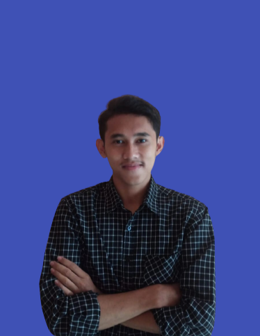

CURICULUM VITAE

Lampung indonesia | +62123244790 | Luckyfebrian877@gmail.com | linkedin.com/in/lucky-febrian-512502228/
TENTANG SAYA
Saya sadalah mahasiswa semester 5 prodi Teknik Informatika di Institut
Teknologi Sumatera yang mendalami minat bidang rekayasa perangkat lunak
dan sistem informasi. Saya mempunyai ketertarikan yang sangat tinggi
terhadap user interface dan user experience sejak 2020. Saya juga bisa
mengoperasikan tool seperti figma
PENGALAMAN PROYEK
PT. BASIC TEKNOLOGI INTERSOLUSI TERPADU
UI Designer Intern
- Melakukan research bersama project manager dan menuangkan hasil nya kedalam sebuah sitemap.
- Membuat Wireframe website dan aplikasi untuk dashboard PT Pertamina Trans Kontinental Port Baubau.
- Menciptakan lebih dari 50 frame tampilan antarmuka aplikasi dan lebih dari 25 frame tampilan antarmuka
website dashboard.
- Menerapkan desain kedalam sebuah mockup.
- Bekerjasama dengan programmer dalam pengimplementasian desain ke dalam code program.
PIXELMEDIA
UI Designer Intern
- Bekerjasama dengan proyek manager dalam masa pengembangan sistem.
- Membuat Wireframe wireframe website dan aplikasi lebih dari 5 proyek.
- Menciptakan lebih dari 100 frame tampilan antarmuka baik website ataupun aplikasi
- Menerapkan desain kedalam sebuah mockup.
- Bekerjasama dengan programmer dalam pengimplementasian desain ke dalam code program.
PENGALAMAN ORGANISASI
IKATAN MAHASISWA LAMPUNG TIMUR
Ketua Departemen Pemuda dan Olahraga
- Mengadakan Kerjasama dengan berbagai pihak dalam bidang Pendidikan, kepemudaan dan olahraga.
- Meningkatkan pemahaman nilai-nilai Pendidikan di kalangan pemuda Lampung Timur dalam rangka
membentuk pribadi intelektual.